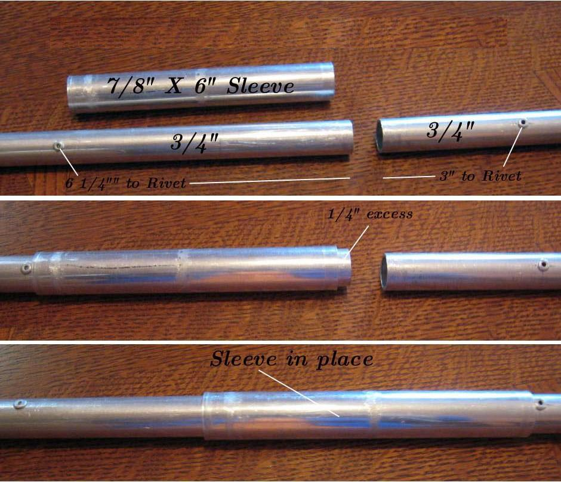

| Sonnet (Sleeves) | Menu Last Page Next Page |
|

Sleeves - The 3 aluminum stringers ( Sonnet 16 shown) have a forward and aft section that connects at the center of the boat using 6" X 7/8" (152mm X 22mm) sleeves. The sleeves allow the frame to be assembled inside the skin.
|
|